Aquatic plants: how patches grow
A3 portrait · 297 × 420 mm · marine left, freshwater right, clumping in the bottom quarter.
Print PDF · Vector artwork · Forth helpers · VM verification
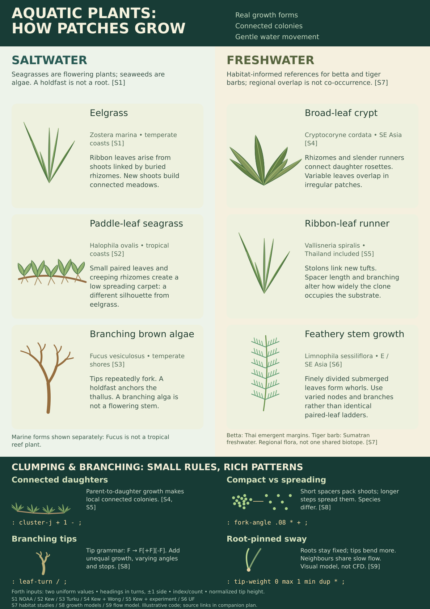
Watch a new ecosystem grow on each selection
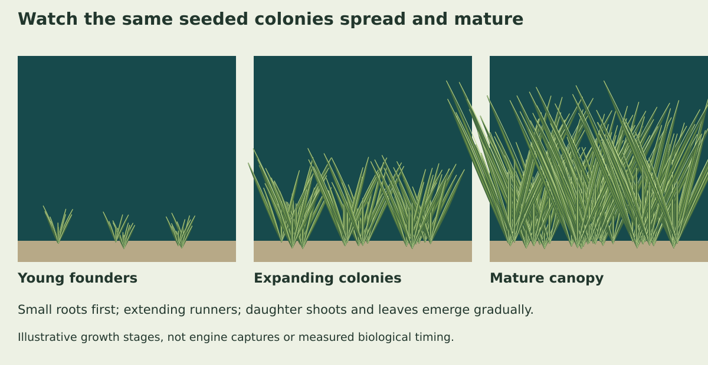
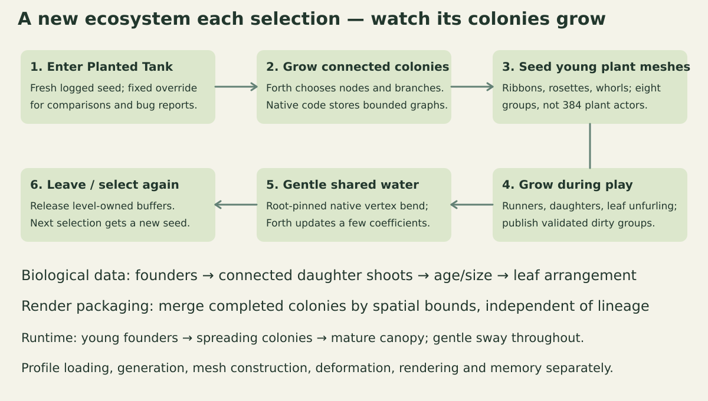

Freshwater and saltwater palettes
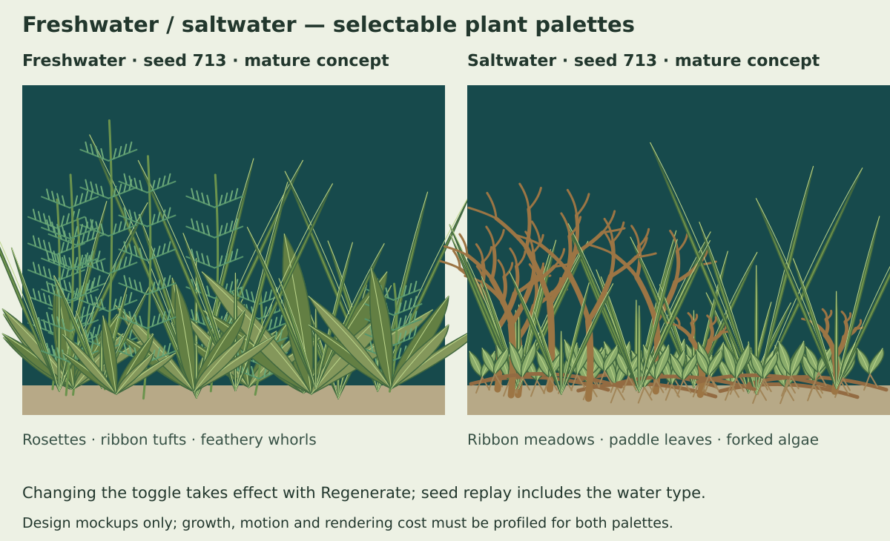
Complete phone settings and TV fallback
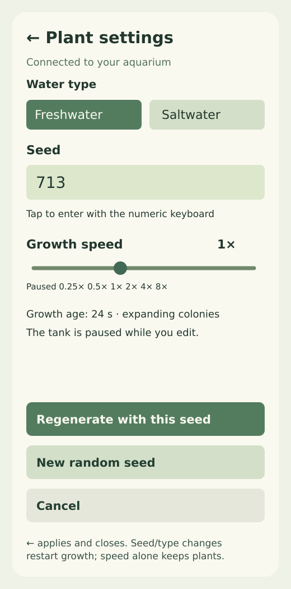
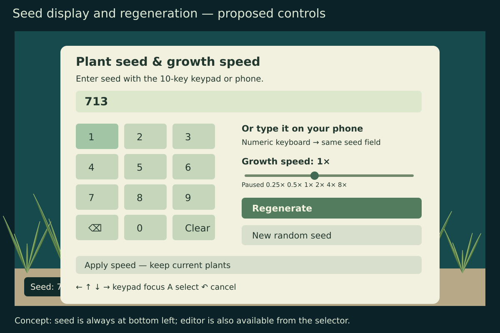
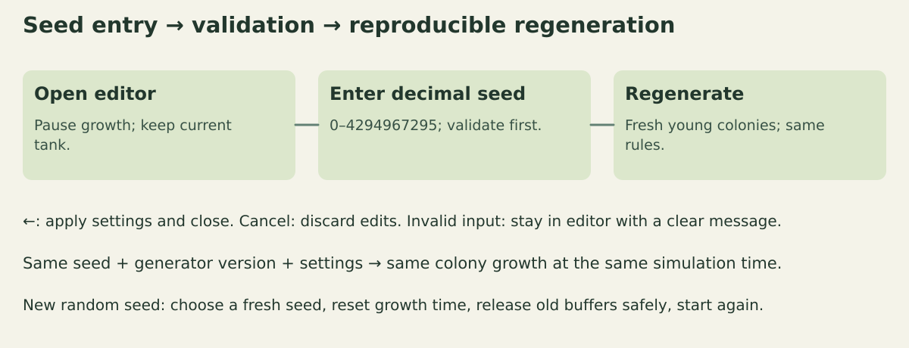
Proposed tank composition
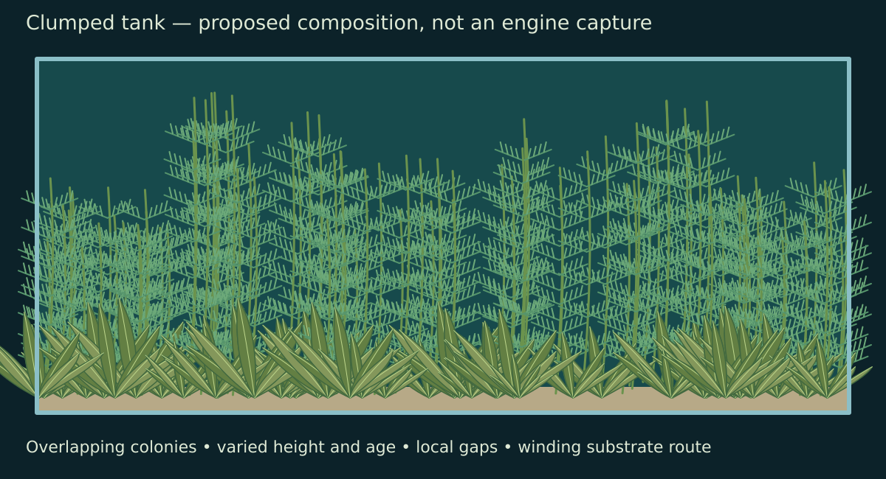
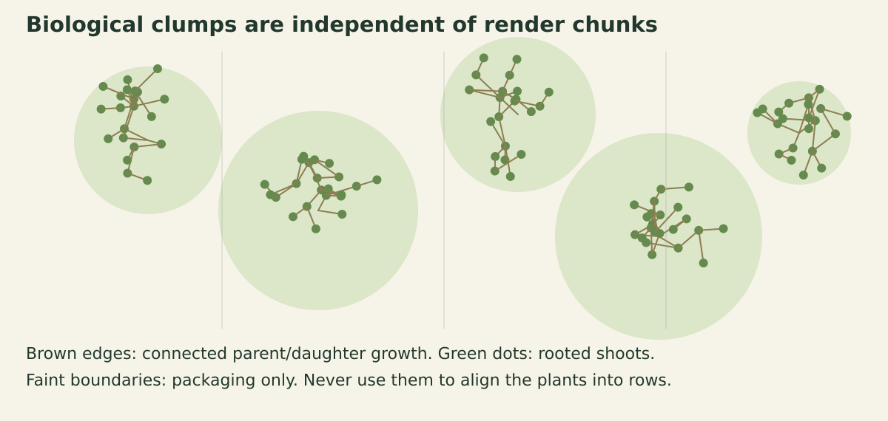
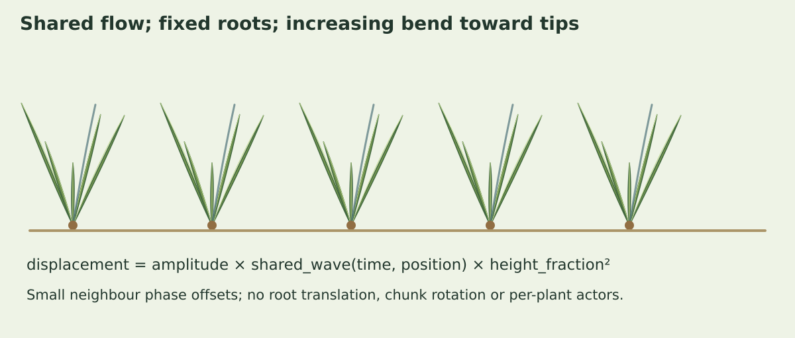
Approved leaf textures
Surface detail will follow individual curved leaves: branching veins on broad leaves, parallel fibres on ribbons, and mottled tissue on algae. The atlas, runtime UVs and textured materials are implemented. Freshwater/saltwater colour and the full phone/settings check passed on Chromecast. All 20 current-version texture traces are complete; the normal APK is restored with verified hash. The current-build mature texture comparison is complete; broader growth/sway and repeated-entry checks remain pending.
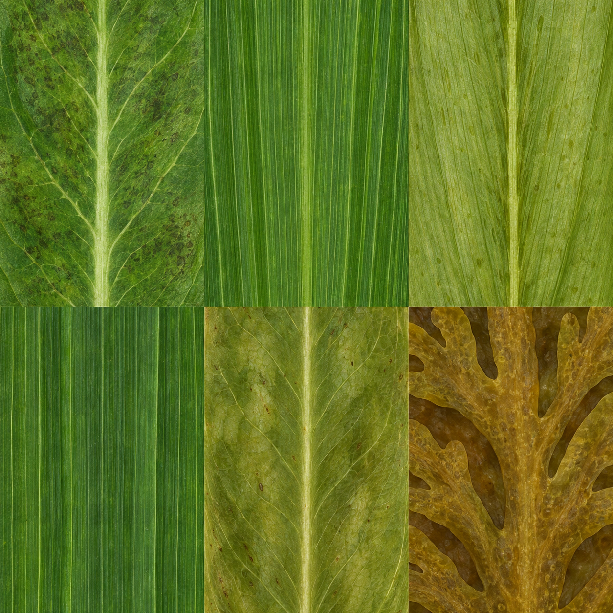
Read the complete updated plan
White-foliage correction
The grey lighting tint was drawn because the legacy shader ignores albedo on non-white vertices. Plant-only modulation now reaches the GL/Metal backend through the compositor. Cached material dispatch also updates with runtime flags.
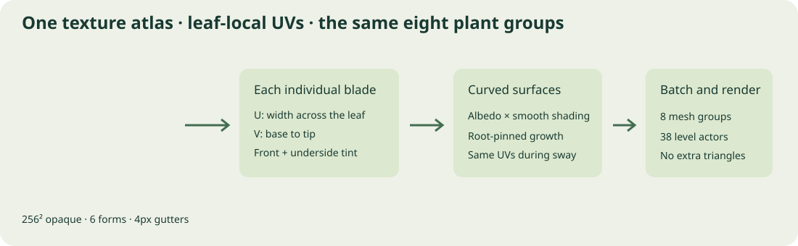
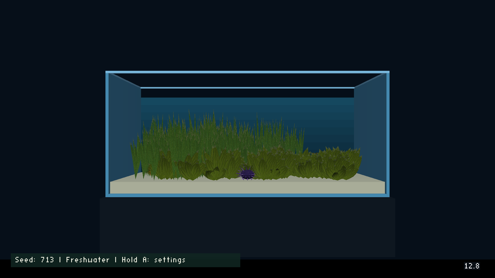
Seed 713. Visual verification passed; the mature-static texture comparison is complete. Textures cost 34–35% FPS; actor CPU stays near 1.3 ms. Broader runtime profiling remains pending. Complete plan and status.
Poster sources
- **S1:** NOAA: seagrass meadows and rhizomes.
- **S2:** Kew: Halophila ovalis morphology.
- **S3:** University of Turku: Fucus tip growth and dichotomous branching.
- **S4:** Kew: Cryptocoryne cordata regional distribution; Wong: runners and leaf morphology.
- **S5:** Kew: Vallisneria spiralis in Thailand; Vallisneria spacer/branching experiment.
- **S6:** University of Florida: Limnophila leaf forms.
- **S7:** Wild betta vegetation study; USFWS tiger-barb distribution assessment.
- **S8:** Rhizome branching across species; seaweed L-system modelling90055-E).
- **S9:** Flexible vegetation motion.